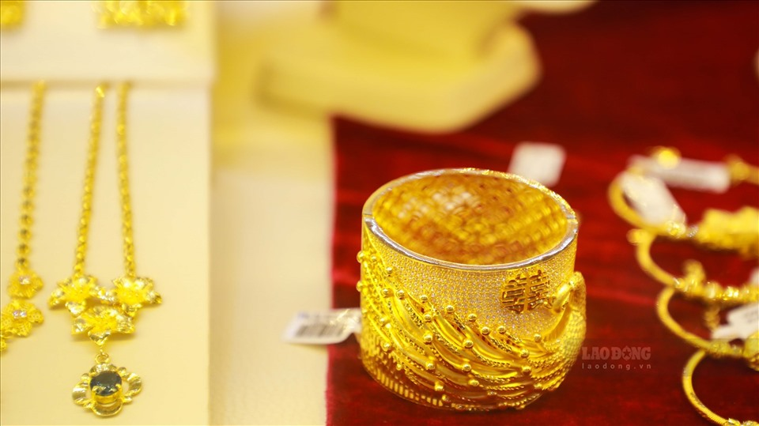

Thời điểm 8h30 theo giờ Việt Nam, giá vàng thế giới đứng ở mức 1.908 USD/ounce, tăng 14 USD/ounce so với cùng giờ sáng qua. Giá của kim loại quý đang trong xu hướng đi lên khi nhà đầu tư ưa chuộng vàng như một kênh đầu tư trú ẩn an toàn, bất chấp đà tăng của đồng USD. Giá vàng tăng trong bối cảnh thị trường chứng khoán Mỹ, châu Âu, Nhật Bản, Hàn Quốc… đồng loạt "đỏ" sàn, sau khi số ca bệnh Covid-19 ở một số quốc gia tại châu Âu tăng đột biến. Pháp phải ban hành lệnh giới nghiêm thủ đô Paris và 8 thành phố lớn khác, Anh cũng đưa ra các lệnh hạn chế ở Luân Đôn. Trong khi đó, các nhà lãnh đạo châu Âu đang họp để thảo luận về đại dịch Covid-19 cũng như những thỏa thuận thương mại với Anh về việc giai đoạn chuyển tiếp Brexit sẽ hết hạn vào cuối năm 2020. Theo đó, nhiều người đã chuyển dòng tiền từ cổ phiếu sang vàng. Tuy giá vàng đi lên nhưng tại thời điểm này, giới đầu tư tỏ ra thận trọng vì không biết được trong thời gian tới, giá vàng chịu tác động từ yếu tố nào. Các chuyên gia thì cho rằng vàng vẫn đang trong xu hướng tăng giá và đồng USD còn suy giảm. Một số chuyên gia khuyến nghị mua vàng khi giá giảm và kỳ vọng vào việc các gói kích thích kinh tế sau cuộc bầu cử Tổng thống Mỹ sẽ giúp hỗ trợ giá vàng. Theo đó, vàng được nhận định sẽ leo thang trở lại, thậm chí vượt ngưỡng 2.000 USD/ounce trước cuộc bầu cử Mỹ bởi nhiều người tin tưởng gói kích thích sẽ khó lòng được thông qua trước 3/11.
Tại thị trường trong nước, sáng nay, Công ty Vàng bạc đá quý Sài Gòn niêm yết giá vàng SJC mua vào bán ra ở mức 55,75-56,27 triệu đồng/lượng, giảm 70.000 đồng/lượng chiều mua vào và 20.000 đồng/lượng chiều bán ra so với chốt phiên tuần qua. Vàng Doji niêm yết giá vàng ở mức 55,8-56,2 triệu đồng/lượng, giảm 50.000 đồng/lượng chiều mua vào so với chốt phiên gần nhất. Phú Quý SJC niêm yết giá vàng ở mức 55,85-56,2 triệu đồng/lượng.